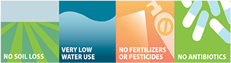

Good For The Planet
From fisherman to supplier, chef to diner — we all have a role to play ensuring that sustainable and environmentally friendly seafood lands on our plates. In Alaska, sustainability is so critical that it is written into the state Constitution mandating that “fish…be utilized, developed and maintained on the sustained yield principle.” SWAP Meat helps you help the planet — wild capture fisheries like those in Alaska require almost no natural resources to produce and have virtually zero environmental impact.
► CLICK FOR MORE INFORMATION
On the environmental friendliness of wild capture fisheries:
SWAP MEAT© for Alaska Seafood